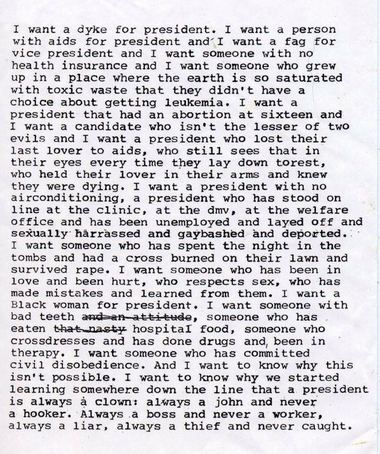

Måndag 30 januari, 2017
Dåsar i sängen, medan hon skypear VDn
för Europas största industrilyftkoncern.
Söndag 29 januari, 2017
Spelade basket med 14-åringar
och visade tecken på utbrändhet.
Lördag 28 januari, 2017
Gråtler till ANOHNI för tiotusende gången.
F.ö. e ja hemligt kär i Molly Nilsson.
Lördag 28 januari, 2017
Toknjuter av turistiga glädjerus,
å förlorar hoops-tävling på sportbar.
Fredag 27 januari, 2017
Bryter vit månad (älskar det!)
OCH har tydligen odlat amerikansk catch phrase:
"I loove that!"
Torsdag 26 januari, 2017
Tatuerar in Tarot-motiv.
På vänstervaden. I San Diego.
10 år efter jag tatuerade in bob hund-motiv.
Ovanför högerankeln. I San Diego.
Onsdag 25 januari, 2017
Mestadels av tiden
känns det fortfarande som
att ja sitter på mitt rum
å leker framför datorn.
Tisdag 24 januari, 2017
Älskar min tjej.
Måndag 23 januari, 2017
Strävar efter ett liv med vardag,
backslick, Tom Ford-skjortor & tandblekta tänder.
Söndag 22 januari, 2017
Mina trägna bundsförvanter,
Ångesten & Rastlösheten,
dåsar i den nyktra månadens sedativa barm.
Lördag 21 januari, 2017
Kalifornien-indexet rusar mot ny toppnotering:
Startar startup.
Demonstrerar Trump.
Äter Pop-Tart.
Fredag 20 januari, 2017
The 58th Presidential Inauguration
(syntolkad version)

Torsdag 19 januari, 2017
"Kisen, du skriver inte bättre på Moleskine-papper."
- Simon Folger, Feelium
Onsdag 18 januari, 2017
Mitt ex fyller 30.
Hon kurerar min åldersnoja.
Tisdag 17 januari, 2017
Vaknar halv-zen
i betongbunker
till inspelat fågelkvitter
& artificiellt solljus.
Måndag 16 januari, 2017
Ensam-scrollar
på de sociala mediernas ändlösa ocean.
Drömmer om en elfri värld,
med riktiga likes.
Söndag 15 januari, 2017
Hon stönade på taket i januarisolen,
& dansar med katt i köket
(när jag inte är i köket).
Lördag 14 januari, 2017
Drack Club Mate i Colosseum-kopia,
riggade nyktert hemmarave.
Fredag 13 januari, 2017
Smugglade in mexikansk mat på bion,
hon friserade mig med kökssax.
Torsdag 12 januari, 2017
Klipper podd 06:10 på morgonen.
Klippte fel.
Onsdag 11 januari, 2017
Hormonstinn på ny kontinent,
kurerar ländrygg med Youtube-yoga.
Tisdag 10 januari, 2017
Pappa smsar kärleksfullt från Nashville,
köpte nästan Eau-de-cologne på taxfreen.
Måndag 9 januari, 2017
00:23-01:54 Förtvivlan. Grusiga ögon.
Förstörde vårt bad badrumsmattan av halm?
Söndag 8 januari, 2017
Köpte sthlms-semlor. 40kr/st.
Tvingade i mig filbunke nära Karlaplan.
Lördag 7 januari, 2017
Har sex till Stjärnorna på Slottet.
Magnus Ugglas dag.
Fredag 6 januari, 2017
Elefantpojken, berusad på alkoholfri öl.
16 minus:
självmedveten i avklippta fingervantar.
Trollade bort nytt körkort.
Torsdag 5 januari, 2017
Fisktacos. Vasamuseet.
Spankulerar över Djurgården,
sibirisk, söderbergsk roman.
Onsdag 4 januari, 2017
Kaotiska himlakroppar!!
//Internet-astrologer
Köper kalenderapp för 360kr (med studentrabatt).
Tisdag 3 januari, 2017
Pussar mamma på kinden,
för första gången på 6 år.
Hämtar nytt körkort. 80-talsleende & -frisyr.
Måndag 2 januari, 2017
Vaknar med bästis i pojkrummet.
Hon rastade familjehunden
vid Borås bästa utsikt.
Söndag 1 januari, 2017
Göteborg.
Nu vänder vi blad.